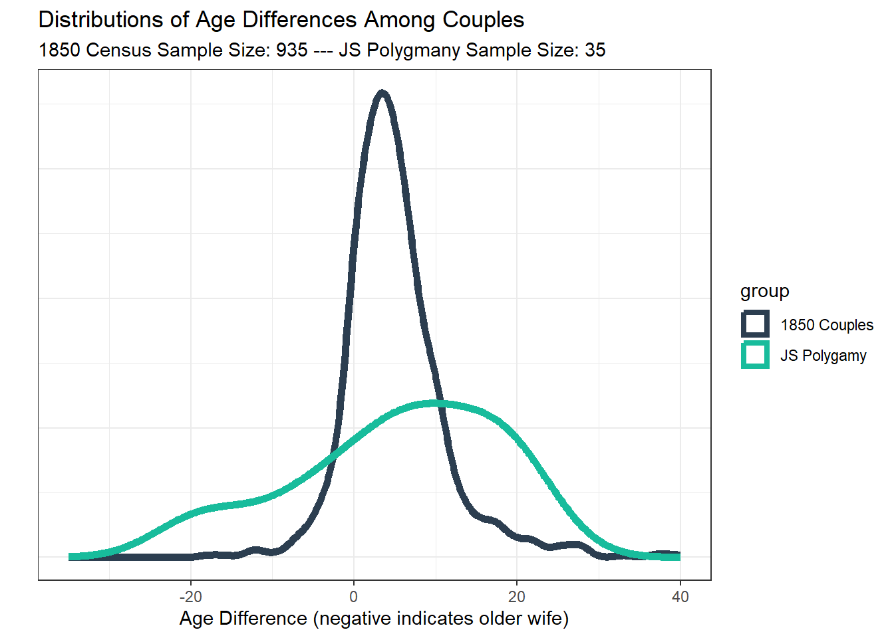

Background
As a member of the Church of Jesus Christ of Latter-day Saints
(a.k.a. LDS Church or the Church), I often hear criticism of my faith’s
theology and history. I typically suspend my acceptance of such claims
until I perform my own research. One of the more common attacks is
regarding the character of the Church’s founder, Joseph Smith. Smith
claimed that God commanded him to institute the practice of plural
marriage, meaning the marrying of more than one wife. He often comes
under fire for this. For instance, it is assumed that each plural
marriage was treated as a typical marriage and were consummated.
Thanks to the work of LDS and Non-LDS historians, we have a pretty
good idea with what happened in most of these plural marriages. Using
this historical data, we can assess different questions about Joseph
Smith’s Polygamy. By doing so, I hope first and foremost to uncover the
truth. I have the firm hope that the truth will show that Smith was a
reputable man, free from hypocrisy and acting within his cultural
context. Should the evidence indicate sexual immorality,
Structure and
Methodology
Primary Question
The analysis will seek to answer the primary question:
“Did Joseph Smith engage in questionable or inappropriate
actions through the practice of polygamy?”
Six secondary questions will be analyzed by a visualization tools
such as a tables, bar charts, or density plots. If the visualizations
leave any questions, a statistical test such as a t test will be used to
further understand the truth. When answering each question, Smith will
be assumed innocent (i.e. within the law, adhering to societal norms,
etc.) until there is sufficient evidence to suggest otherwise.
Because more than one statistical test will be performed, Bonferoni’s
method of test correction will be applied to lower the risk of type 1
error. Significance levels will be adjusted accordingly.
Outline
In pursuit of an answer to this question, the following secondary
questions will be asked :
Data Sources
Historical data such as the names, ages, and other factors was
sourced from the work of Brian Hales. Observational data including the
strength of any evidence of sexual relations were not the author’s, but
sourced from the work of Brian Hales. The author reviewed the primary
and secondary historical evidences to determine whether Emma Smith was
aware of the plural marriages. All data regarding Joseph Smith’s
Polygamy was sourced from the various pages on Brian Hales’ website, josephsmithspolygamy.org.
Data used from the 1850 US census was retrieved from the IPUMS
database. The data set used was a random sample of
census records totaling 1% of the US population surveyed.
Definition of Pedophilia
Because one of the questions being asked regards Smith showing
pedophilic tendencies, the term will be defined. Dictionaries
contemporary to Smith do not have the term, therefore a modern
definition will be used. This analysis will not seek to officially
diagnose anyone with any mental disorders. Any conclusions regarding
such will be, at most, observations regarding trends in the historical
record. For purposes of the analysis, a synthesis of the definitions
provided by the American Psychological Association and the American
Psychiatric Association for pedophilia will be used as the strictest
definition.
According to the American Psychological Association, pedophilia is “a
paraphilia in which sexual acts or fantasies involving prepubertal
children are the persistently preferred or exclusive method of achieving
sexual excitement.” The Diagnostic and Statistical Manual of
Mental Health Disorders, published by the American Psychiatric
Association, adds that the sexual acts or fantasies are “with a
prepubescent child or children (generally age 13 years or younger).”
Taking a looser definition based on these criteria, the established
definition of pedophilia for this analysis will be, “any stand-alone or
repeated sexual relations with an individual or individuals below the
age of sixteen.” The intention behind expanding this definition is to
fit the definition within the moral intuitions and sensibilities of the
broader public.
Trends within Smith’s Marriages
With the data gathered, inferences and conclusions can be drawn when
we cross reference data such as type of sealing, historical evidence of
sexuality, the knowledge that his first wife, Emma, had, and such.
Are any of Joseph Smith’s
relations consistent with pedophilia?
It is often and understandably inferred that two married individuals
will engage in sexual relations at some point. When it is learned that
Smith had several wives under 18, inferences such as this cause many to
assume he was having sexual relations with all of them.
Table
The following table shows relevant data for each level of historical
evidence for sexual relations.
| None |
14 |
34.6 |
58 |
1.9 |
23 |
| Weak |
19 |
28.7 |
43 |
6 |
3 |
| Moderate |
17 |
22.8 |
30 |
13.8 |
5 |
| Strong |
17 |
19.2 |
22 |
14 |
4 |
The data suggests that there is no evidence that Smith engaged in
sexual relations with anyone under the age of 17. It does appear that
younger wives than average appear in the moderate and strong categories.
Trends of age and age difference
among his plural wives are further analyzed below.
Conclusion
Given the definition of pedophilia set forth,
there is insufficient evidence to adopt the view that Smith had
pedophilic tendencies. There is no evidence that Smith met the criteria
of a pedophile.
Further study into the historical data can provide insight on a case
by case basis. For more information on the issue of Smith’s sealings to
young bride, this
article is highly recommended.
Did Smith hide sexual
realtionships from his first wife, Emma?
Especially during the early days of his practice of plural marriage,
Smith’s first wife Emma Hale was not made aware of the sealings he was
entering into. This has been pointed to as a betrayal of trust on
Smith’s part. The complex issue deserves historical analysis, but there
may be lessons to be learned from the statistics.
Table
The following table will show Emma’s awareness of his marriages
across different levels of evidence of sexuality.
Please note that the historical record is unclear about which
marriages Emma had prior knowledge of.
Joseph Smith was transparent about sealings with sexual
relations
| None |
2 / 23 |
34.6 |
| Weak |
0 / 3 |
28.7 |
| Moderate |
4 / 5 |
22.8 |
| Strong |
3 / 3 |
18.3 |
Conclusion
While Smith was not fully transparent with his first wife regarding
each and every plural wife, the historical data suggests that Emma was
aware of the vast majority of relationships where sexuality was possibly
occurring. The trends suggest that Smith was not hiding sexual
relationships from his first wife.
With that said, elsewhere there is evidence that Emma had difficulty
accepting the practice of polygamy. For more information on the subject,
this
article is highly recommended.
What is the relationship
between the type of sealing and evidence of sexuality?
Today in the LDS Church, the only sealings performed for the living
are time-and-eternity sealings. That is, a man and a wife are joined in
union for the rest of this life as well as in the next life. However, in
the early days of the church, this was not solely the case. Sealings
could be performed for time, time-and-eternity, or eternity.
Graph
Sealings involving time would be treated as legal marriages are, but
eternity-only sealings would not. Given the LDS Church’s consistency in
teaching that sexual relations be within marriage, evidence that Smith
engaged in sexual relations within eternity-only sealings would imply
hypocrisy.
The following graph will display the evidence of sexuality, grouped
by the types of sealings.

Conclusion
As type of sealing and historical evidence of sexuality are
juxtaposed, it becomes clear that the only relationships with stronger
evidence of sexuality (moderate to strong) were those which were treated
as legal marriages. Thus, there is enough evidence to conclude that
Smith was not violating the principles he taught and enforced.
It is likely that Smith viewed Time and Eternity sealings as being
legitimate marriages. Thus, he did withing those relationships what
married people do.
Comparison to Contemporary Trends
While modern moral sensibilities are violated when and adult man is
said to have slept with a teenager, the past is akin to a different
country. A comparison of social trends in Smith’s day may yield insight
into any deviance from modern trends.
Despite the illegality of
polygamy, was Smith otherwise within local marriage laws?
The accusations that Smith was a pedophile primarily revolve around
his being sealed to 14 year old name Helen Mar Kimball. More on that can
be learned in this
article. If Smith’s marriages showed to be outside of Illinois
marriage laws, this would raise questions on his motives.
Table
While the Church was in Illinois, the marriage laws stated that with
parental consent, anyone female as young as 14 years old female was able
to be married. Without parental consent, a female must
have been 18 or older. While laws have changed much since then, in those
days, it would have been legal if Smith had permission from the
parents.
The following table lists each of Smith’s plural wives under the age
of 18. Stated is the sufficiency of the evidence to conclude that a
legal guardian other than Smith gave approval for the plural
marriage.
| Flora Ann Woodworth |
16 |
Yes |
None |
| Helen Mar Kimball |
14 |
Yes |
None |
| Lucy Walker |
17 |
Yes |
Strong |
| Sarah Ann Whitney |
17 |
Yes |
None |
| Sarah Lawrence |
17 |
Yes |
Moderate |
The table clearly shows that each bride under 18 had consent from a
guardian.
Conclusion
While he was not necessarily bound by Illinois law (they were not
legally recognized marriages), it appears that Smith fully respected the
law. The adherence to the law indicates an awareness of his present
social norms.
Furthermore, it can be inferred that, because Smith was withing the
law, he was conscious of it and trying to keep it.
How do the ages of his
brides compare to contemporary marriage trends?
In the 1850 US Census, citizens were asked if they had gotten married
within the past year. Filtering everyone who said yes and who was female
will show a contemporary spread of marriage ages. If the ages of Smith’s
wives are significantly less than the norm, it may be concluded that
Smith disproportionately targeted young women. This, paired with any
other deviations in rends, could count towards evidence that Smith used
his power to acquire sexual satisfaction.
Graph
To approach an answer, the distributions will first be visualized
using a density plot.

While both of the distributions appear right skewed, Central Limit
Theorem indicates that, since the 1850 Census is well over 30, it can be
taken to be representative of the population.
Table
Summary Statistics: Female Ages at Marriage
| 1850 Couples |
13 |
21 |
22.76 |
66 |
6.855 |
935 |
| JS Polygamy |
14 |
30 |
30.63 |
58 |
12.41 |
35 |
The summary statistics table highlights that Smith’s plural wives had
a higher median and average age relative to to contemporary marriage
ages. The higher standard deviation also indicates the data to be more
spread out.
Statistical Test and Conclusion
Despite the antagonists claiming Smith targeted younger women,
because of the implications of the visualization and the table, the
hypothesis tested will be the opposite.
The assumption (\(H_o\) or null
hypothesis) is that there will not be significant differences between
the averages (\(\mu\) or mean) the two
group.
\[
H_o: \mu_\text{Avg Age of 1850 Wives} = \mu_\text{Avg Age of JS Plural
Wives}
\]
The prediction (\(H_a\) or
alternative hypothesis) is that the average marriage age of 1850 women
is less that the average marriage age of Smith’s plural wives.
\[
H_a: \mu_\text{Avg Age of 1850 Wives} < \mu_\text{Avg Age of JS
Plural Wives}
\]
A confidence level of 97.5% will be used, and thus a significance of
0.025 will be needed to accept the alternative hypothesis. A p value
below the significance (\(p <
0.025\)) will result in accepting \(H_a\).
Two Sample T-test: Smith’s wives significantly older than norm
(continued below)
| -3.732 |
34.78 |
0.0003384 * * * |
less |
The test statistic indicates that the female’s marriage ages in the
1850s sample mean are roughly 3.7 standard deviations less than mean of
the ages of Smith’s plural wives. This tells of a large difference in
the two groups. With the prediction that it would be smaller, P value
indicates that the probability of seeing such a difference is about
.0003384. This means our observed values are highly
improbable.
Because \(p < 0.025\), it appears
that, in stark contrast to the critic’s claims, there is sufficient
evidence to reject the null hypothesis. Thus, in accepting the
alternative, it is realized that Smith’s plural wives were significantly
older than contemporary trends.
How do the age difference
between him and his wives compare to contemporary trends?
Taking the average age individuals of both sexes were married in
1850, we can compare this to the same in Smith’s marriages. If the
difference were significantly less than the societal norm, it would be
assumed that Smith was violating the norm consistently.
As a note, these values represent averages. While, on a case by
basis, deviation will likely be found, the comparison of the averages
will show how this fits across Smith’s entire range of marriages.
Graph
To approach an answer, the distributions will first be visualized
using a density plot. Remember, the wife’s ages was subtracted from the
husband’s, so a positive values indicate an older husband and a negative
an older wife.

The distributions seems slightly skewed, and it definitely appears as
though Smith trended toward having larger age gaps that within his
plural marriages than what was generally seen.
Table
The following table will give a overview of the summary statistics of
the two samples.
Summary Statistics: Age Differences Among Couples
| 1850 Couples |
-18 |
4 |
5.037 |
40 |
6.115 |
935 |
| JS Polygamy |
-21 |
7 |
5.343 |
23 |
12.34 |
35 |
It would appear that, while the median is noticeable higher, the
average age difference is very similar. This differences of the means
and medians support the data being somewhat skewed. Given the larger
standard deviation, the age gap in Smith’s marriages varies more widely
than contemporary trends.
Statistical Test and Conclusion
Our assumption (\(H_o\) or null
hypothesis) will be that there is no significant difference in the
average age difference of Smith’s plural marriages and other
contemporary couples.
\[
H_o: \mu_\text{Avg Age diff / 1850 Marriages} = \mu_\text{Avg Age diff /
JS Plural Marriages}
\]
Given the graphic and table, our prediction (\(H_a\) or alternative hypothesis) will
mirror that of the critics, being that the age gap in Smith’s plural
marriages is greater than that of contemporary couples.
\[
H_a: \mu_\text{Avg Age diff / 1850 Marriages} < \mu_\text{Avg Age
diff / JS Plural Marriages}
\]
A confidence level of 97.5% will be used, and thus a significance of
0.025 will be needed to accept the alternative hypothesis. A p value
below the significance (\(p <
0.025\)) will result in accepting \(H_a\).
Two Sample T-test: Age gaps not significantly different
(continued below)
| -0.1458 |
34.63 |
0.4425 |
less |
The test statistic indicates that the age differences in the 1850s
sample mean are roughly .15 standard deviations less than mean of
Smith’s age difference to his plural wives. This means that only a small
difference between the two groups is observed. The p value indicates
that the probability of seeing this is .44, which is fairly high.
Because \(p > 0.025\), we fail to
reject the null hypothesis. There is insufficient evidence to support
the critics’ claims that Smith targeted disproportionately young women
based on the difference in their marriages.
Analysis Conclusion
In conclusion, across the six secondary questions asked, there is
only one instance of Smith departing from societal norms or having
questionable practices. This involved the fact that there is sufficient
evidence to conclude that Smith’s plural wives were, on average,
significantly older when married to Smith than would be expected.
Thus, I conclude that Smith did not use polygamy as a way to justify
and engage in questionable or inappropriate actions.
While the practice of polygamy in the United States was unusual then
and still is now, Smith seem to have stayed within the laws he set forth
as a religious leader, withing local customs, and within the trust of
those closest to him.